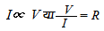
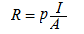

ओम का नियम
वे पदार्थ जिनमें वैद्युत आवेश का प्रवाह सुचालकों की अपेक्षा कम तथा अचालकों से अधिक होता है, अर्द्धचालक कहलाते है, जैसे - जर्मेनियम, सिलिकाॅन आदि।
ओम का नियम, 
यहां R चालक का प्रतिरोध है तथा  जबकि P चालक के पदार्थ का विशिष्ट प्रतिरोध है और इसके व्युत्क्रम को चालक के पदार्थ की विशिष्ट चालकता से जाना जाता है। यह केवल पदार्थ की प्रकृति पर निर्भर करता है।
विशिष्ट प्रतिरोध का मात्रक ओम-मीटर (Ω-m) होता है तथा विशिष्ट चालकता का मात्रक (ओम-मीटर)-1 (Ω-m)-1 या सामेन-मीटर-1 (S - m-1) होता हैं।